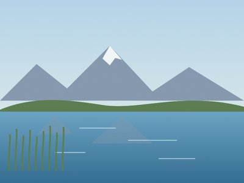

Our walks
Jump to a walk:
Ridge walk
A steady climb of two hours to the top of the ridge, with wide views on a clear day. Grade: moderate.
Distance: 8 km.
Lake walk

A flat path around the lake, suitable for children and pushchairs. Grade: easy.
Distance: 5 km.